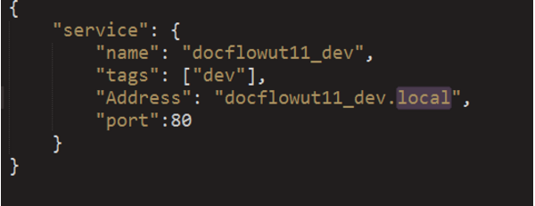
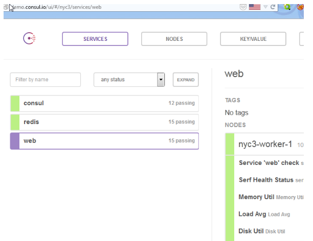

Использование service discovery в 1С и как победить рассылки пользователя из тестовой базы.
Если у вас нет возможности изменять конфигурации (то есть дорабатывать), то вряд ли вам пригодится данная статья на практике.
Service dicovery, в контексте данной статьи, подразумевает под собой «управление сервисами».
А есть ли проблема?
Давайте рассмотрим на примере типовой конфигурации УТ 11 (Управление торговлей редакция 11), какие службы, внутренние или же внешние, используются в данной конфигурации. Навскидку сразу же приходят на ум такие сервисы:
Настройка всех этих сервисов предполагает сохранения настроек подключения прямо в базе. Для конечного пользователя это, конечно же, очень удобно. Все меняется, когда мы с вами в стадии разработки, хотим сделать копию базы данных и оттестировать необходимый новый функционал или же начинаем разработку на копии базы данных (примечание: ЕБД-шники (Единая База Данных) с терабайтными базами могут с такими проблемами не встречаться).
Копия базы данных с запущенными фоновыми заданиями может сломать вам обмен, может разослать недостоверную информацию клиентам и т. д. Конечно же, это накладывает на нас с вами ограничения «Не забудь отключить фоновые задания, а если я вручную запущу рассылку рекламных СМС в виде теста?» (в моей практике одна из подобных ошибок привела к отсылке 900 тестовых страховок в сторону реального провайдера страховых полисов). Каждый раз, когда запускаем копию базы данных на другом сервере 1С предприятия, мы с вами должны помнить об отключении всех фоновых заданий, необходимо на всякий случай пройтись по всем настройкам и изменить их или же удалить, т. к. случайное нажатие или тест может нам все испортить в реальной работе.
В каком окружении мы в этот момент находимся
Проблема в том, что, работая с базой данный в 1с, мы с вами не знаем, в каком же окружении мы в этот момент находимся, в development или production или же testing (stage).
Но даже если мы определили, что находимся в разработке, как определить, что нам не надо отослать тестовое сообщение или проверить правильность обмена данными?
Для еще большего понимания возможных коллизий добавим:
Тогда количество возможных сочетаний N×M×5.
Решение в лоб №1 - константа Self
Устанавливаем в константе текущее имя базы данных и в случае работы фонового задания на обмен, отправку сообщений и т. д., при несоответствии строки подключения с записанной константой делать исключение. Строка подключения рабочей базы чаще всего отличается от строки подключения development или тестовой базы. Проблема данного решения в том, что при необходимости протестировать или доработать один из сервисов, изменяя константу, мы автоматом запускаем все остальные сервисы в работу.
Решение в лоб №2 - Песочница
Полностью дублируем инфраструктуру, а для внешних сервисов запрашиваем адреса контуров типа sandbox. Такой подход еще называется “Поиграем в магазин” или “Интеграционное тестирование”. Проблем здесь тоже достаточно - автоматизировать такое долго, ресурсы дублирующие рабочее окружение дорогие, да и внешние провайдеры иногда даже не имеют контуров для тестирования. Добавьте к этому еще и сокращение сроков выпуска функциональности - так как каждый релиз требует сбора всей команды и полную проверку. Я уже не говорю, что обновление production тоже должно происходить массово, как только одно из обновлений ошибочно, откатывать придется все системы/сервисы.
А может, попробовать аккумулировать все настройки в едином месте?
Внутреннее централизованное хранилище
Создать справочники «Настройки обменов» и для каждой строки подключения создать элемент справочника и поместить туда сериализированное значение настроек. Потом, конечно, захочется добавить так называемый роутинг, иерархическую структуру, в зависимости от вида настройки, потому как все настройки хранить в одной структуре неудобно и так далее.
Использовать внешние по отношению к 1с сервисы
Можно использовать мировой опыт по управлению сервисом, например, опыт того же google. У них даже еще большая проблема, чем в 1с, т. к. сразу пытаются решить проблему использования сервисов в различных дата-центрах, балансировки и т. д. Если поискать понятие service-discovery, то найдем довольно много информации из мира docker/OpenStack, там тоже сталкиваются с тем, что различные микро-сервисы должны связываться друг с другом, при этом в различных вариантах работы (production, development, testing).
Основной принцип service-discovery — различные сервера регистрируют свои сервисы в центральном хранилище, чаще простое key-value хранилище. При этом доступ к параметрам этих сервисов можно получить с помощью dns запроса, а так же простым HTTP запросом и в ответ получить JSON. Например, настройка сервиса обмена с документооборотом сводится к тому, что вместо адреса «docflow.demo.1c.ru/docflow_trade/» мы указываем базовый адрес «docflow.consul.local» и для запроса добавляем уже имя базы данных из строки подключения, в итоге у нас с вами будет «http://ut11.docflow.prod.skydns.local», а для базы разработки будет «ut11_dev.docflow.prod.skydns.local», но т. к. в службе сервисов по данному DNS имени не будет зарегистрировано ни одной службы, то и ошибочного обмена у нас с вами никакого не произойдет.
Можно выделить два программных продукта по управлению сервисами, первый consul и второй etcd в связке с skydns. У consul содержит в себе уже и dns сервер и key/value хранилище, во втором примере etcd выступает как key/value хранилище, а skydns сервером dns, берущего настройки из etcd.
Принцип работы с данным службами прост и описан в документации, но хотелось бы выделить некоторые особенности.
Consul - Service discovery и 1С
Все настройки сервисов в Consul хранятся в JSON файлах, можно данные файлы хранить в системах контроля версий.

Честного роутинга не получилось добиться в consul , т.е. указать адрес для “ut11.docflow.service.consul” и для “ut11_dev.docflow.service.consul” не получилось, поэтому при использовании consul пользуюсь объединением без точки ut11_devdocflow.service.consul.

В то же время, у Consul приятный web интерфейс, что позволяет быстрее увидеть красивую картинку.
SkyDNS+ETCD - особенности
Основное неудобство, по сравнению с consul, - это необходимость запуска сервисов в строгой последовательности и отсутствие в etcd поддержки 32-битных систем, но позволяет более красиво оформлять путь к сервисам, для регистрации такого сервиса ut11.docflow.services.skydns достаточно выполнить команду
etcdctl set /skydns/services/docflow/ut11 ‘{“host”:”docflow.1c.ru’}
У Skydns основное преймущество, по сравнению с Consul, это поддержка PTR записей в dns-службе.
Выводы
Использовать или нет, это вам решать. Надеюсь, на данном примере я смог показать, как будет больно, если вся наша автоматизация сработает, но с неправильными или устаревшими данными. Необходимость создания страховки от несчастного случая заставляет нас с вами делать дополнительные телодвижения и добавлять еще один сервис, который необходимо поддерживать. Поддержка заключается в описании дополнительных служб, которые мы используем, и даже это позволяет нам заявлять о документировании используемых служб. Что, поверьте, не бесполезно.